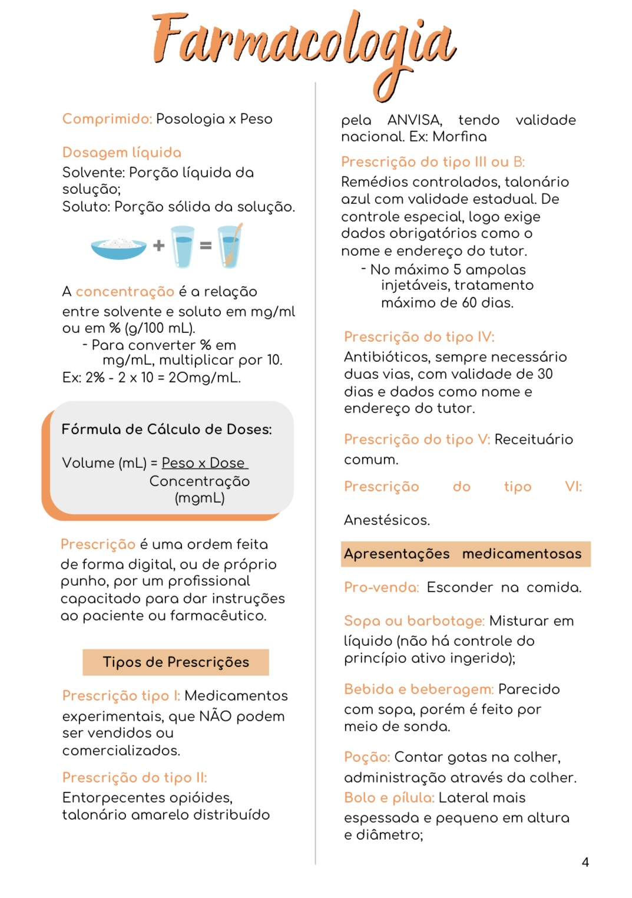
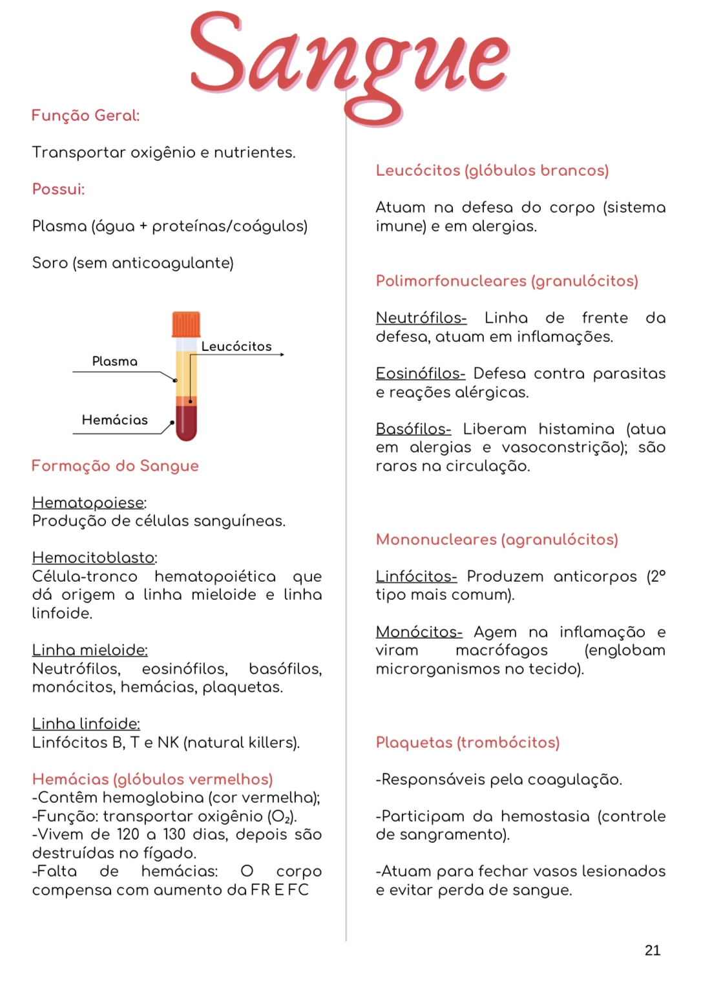
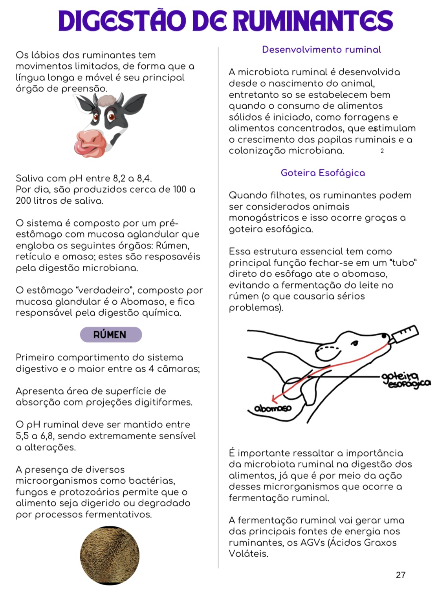
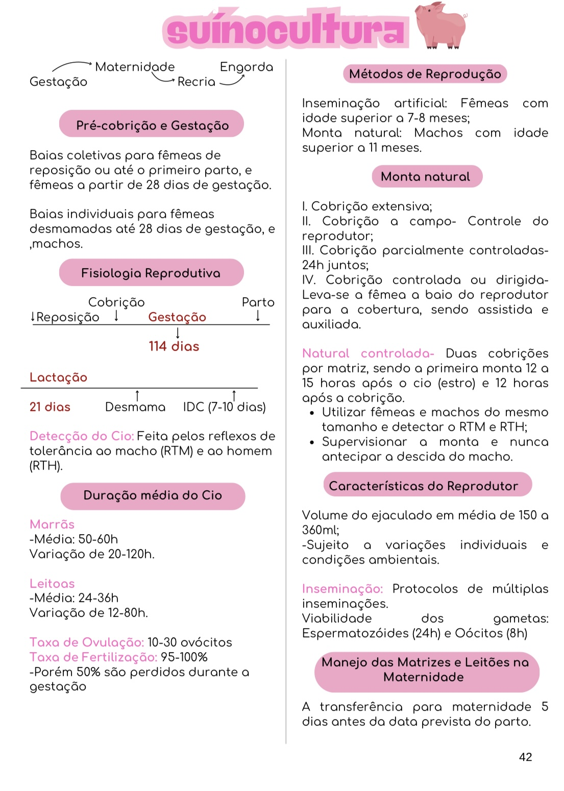

Tenha os principais conteúdos organizados em um só lugar! Um guia de resumos para facilitar sua revisão, sem precisar começar cada estudo do zero.
💉 Quero ter o guiaAcesso imediato após a compra · Garantia de 7 dias
Conforme o curso avança, a quantidade de conteúdos aumenta. São aulas, anotações, PDFs, livros, resumos e materiais diferentes para consultar.
Muitas vezes, antes mesmo de começar a estudar, você já precisa gastar tempo tentando descobrir onde está o conteúdo que precisa.
Foi pensando nessa dificuldade que criei um Guia de Resumos de Medicina Veterinária. A proposta é simples: reunir diferentes conteúdos da graduação em um material organizado, variado e visualmente agradável, para facilitar sua consulta e suas revisões.
Em vez de começar cada estudo procurando em diferentes lugares, você encontra os conteúdos presentes no guia separados por módulos.
O guia reúne conteúdos de diferentes áreas importantes da graduação, tudo organizado em um único material.
Terapêutica, acidentes, intoxicações, choque e grupos sanguíneos.
13 resumosDiferentes sistemas e processos fisiológicos.
10 resumosAvicultura, ovinocultura, suinocultura e piscicultura.
4 resumosLesões, necrose, inflamações e neoplasias.
9 resumosToque em cada módulo para ver todos os conteúdos incluídos.
O guia foi pensado para tornar sua rotina mais prática.
Diferentes assuntos dentro de uma mesma estrutura, sem precisar organizar tudo sozinho.
Os conteúdos ficam separados por área, facilitando a localização do assunto que você procura.
O material utiliza formatos diferentes de estudo, de acordo com o conteúdo de cada módulo.
Menos tempo gasto procurando onde está determinado assunto e mais facilidade para começar sua revisão.
Desenvolvido com atenção à organização e à apresentação, para tornar a consulta mais agradável.
Pensado por dentro do curso, para quem também precisa revisar muito conteúdo.
Não precisa imaginar como é. Veja o material por dentro antes de decidir.




"Sou Nina Neves, estudante de Medicina Veterinária, atualmente me despedindo da graduação, tenho experiência hospitalar em centro cirúrgico e sou apaixonada por felinos. Criei este guia porque também conheço a dificuldade de lidar com uma grande quantidade de conteúdos e materiais durante a graduação. A ideia surgiu justamente para ajudar quem sente dificuldade em se organizar para estudar e acaba gastando muito tempo procurando materiais em diferentes lugares."
— Nina Neves (@meuestudovivo)
Criadora do Guia
13 resumos com conteúdos de farmacologia, terapêutica, acidentes, intoxicações, choque e grupos sanguíneos.
10 resumos abordando diferentes sistemas e processos fisiológicos.
4 resumos sobre avicultura, ovinocultura, suinocultura e aspectos básicos da piscicultura.
9 resumos sobre alterações cadavéricas, lesões, necrose, inflamações, regeneração e reparo, exsudato, transudato e neoplasias.
Além de todo o conteúdo principal do guia, durante o lançamento você também recebe 2 resumos de Enfermidades de Pequenos Animais.
Um conteúdo extra para ampliar ainda mais seu material de apoio nos estudos.
Este é o lançamento do guia. Por isso, além dos conteúdos que já estão disponíveis, quem adquirir o produto terá acesso, sem pagar nenhum valor adicional, aos próximos conteúdos que serão liberados posteriormente.
Futuros conteúdos incluídos:
Você compra durante o lançamento e, conforme esses novos conteúdos forem liberados, terá acesso a eles sem precisar pagar novamente.
Você tem 7 dias de garantia para conhecer o material e avaliar se ele faz sentido para sua rotina de estudos. Confio no material que preparei e, por isso, você pode conhecer o guia com essa segurança.
O valor normal do produto será R$ 197,00. Mas, por ser o lançamento, você entra agora por um valor especial.
Você garante o acesso ao conteúdo atual, recebe o bônus de lançamento e ainda terá acesso aos futuros conteúdos listados acima, sem pagar valor adicional.
Não. O guia é um material de apoio para estudos e revisões. Ele não substitui aulas, professores ou referências acadêmicas utilizadas na sua graduação.
Principalmente para estudantes de Medicina Veterinária, especialmente quem está na metade do curso ou mais avançado e precisa lidar com uma quantidade maior de conteúdos.
São quatro módulos: Farmacologia Veterinária, Fisiologia Veterinária, Criação Animal e Fisiopatologia Geral Veterinária.
São 13 resumos de Farmacologia, 10 resumos de Fisiologia, 4 resumos de Criação Animal e 9 resumos de Fisiopatologia Geral Veterinária.
A proposta é justamente reunir os conteúdos presentes na oferta em um único material organizado, facilitando sua consulta e revisão.
Ele pode ser utilizado como material de apoio para revisão e estudo, mas não substitui o conteúdo específico indicado pelos professores ou pela sua instituição.
O acesso é feito pela área de membros da plataforma, enviado imediatamente após a compra para o e-mail informado na compra, e por lá você já visualiza todo o conteúdo.
O produto é vendido e entregue pela Kiwify.
Sim. Você conta com 7 dias de garantia.
Sim. Durante o lançamento, você recebe 2 resumos de Enfermidades de Pequenos Animais como bônus, além de acesso aos futuros conteúdos que forem liberados, sem pagar valor adicional.
O valor normal do produto é R$ 197,00. Durante o lançamento, o investimento é de R$ 67,00 à vista, com opção de parcelamento em 12x de R$ 6,00 pela plataforma. O valor exato da parcela pode variar conforme aparecer no checkout.
Tenha os conteúdos presentes no guia organizados por módulos e facilite sua rotina de revisão.
Farmacologia Veterinária + Fisiologia Veterinária + Criação Animal + Fisiopatologia Geral Veterinária
🩺 Quero ter o guiaR$ 67,00 à vista · 7 dias de garantia